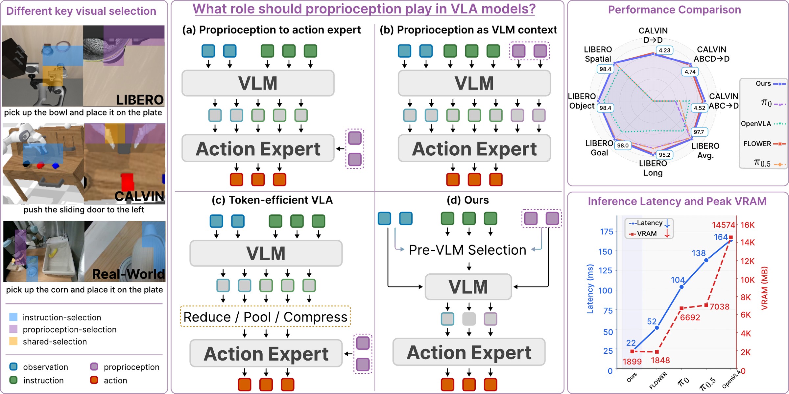
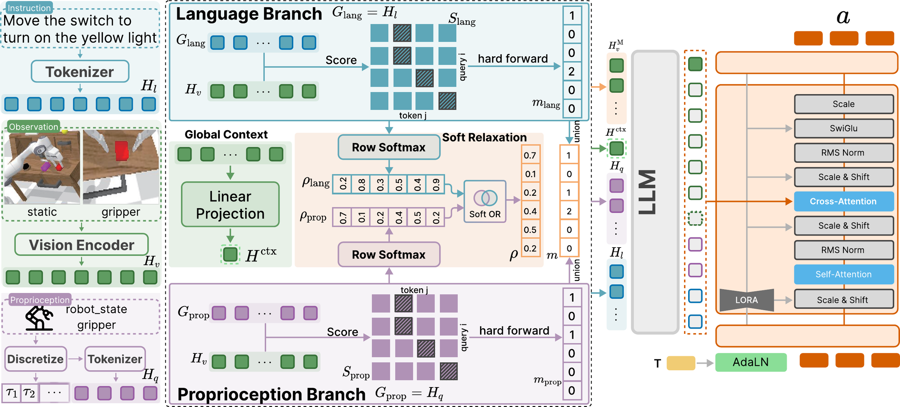
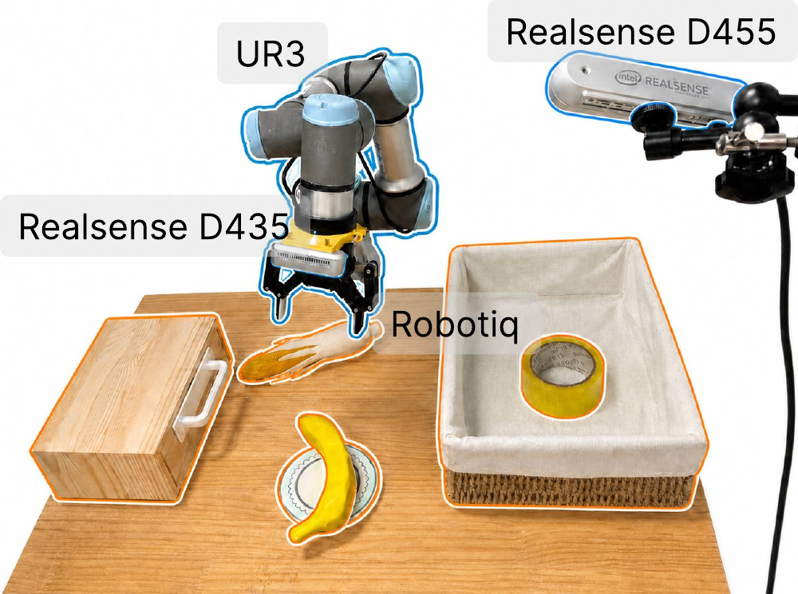

TL;DR Proprioception, written as VLM-vocabulary tokens, works with the instruction to choose which visual patches the VLM sees. Keeping about 12% of visual tokens improves performance and cuts per-step latency from 52 ms to 22 ms.
Abstract
Vision-language-action (VLA) models typically inject proprioception only as a late conditioning signal, preventing robot state from grounding instruction understanding or directing visual attention. We introduce ThinkProprio, which discretizes proprioception into VLM-vocabulary tokens and uses them jointly with the instruction to gate visual patches before VLM computation, steering the model toward action-relevant evidence while discarding redundant tokens early. We find that proprioception added as a passive conditioning signal leaves performance essentially unchanged; its value emerges when token-form state acts as an active query that, with the instruction, selects which visual patches the VLM processes. Systematic ablations show that VLM-vocabulary tokens match or outperform alternative state encodings without adding encoder parameters, and that retaining only about 12% of the visual tokens surpasses the full-token baseline on CALVIN ABC→D. Across CALVIN, LIBERO, and real-world manipulation, ThinkProprio reduces end-to-end inference latency while improving the matched full-token baseline.
Method

Proprioception is discretized into VLM-vocabulary tokens. Before the VLM, an instruction branch and a proprioception branch each vote for visual patches; their union, together with a global context token, is passed to the VLM. A flow-matching action head cross-attends to the resulting features to generate action chunks.
Results
CALVIN ABC→D
| Method | 1 | 2 | 3 | 4 | 5 | Avg. Len. |
|---|---|---|---|---|---|---|
| OpenVLA | 91.3 | 77.8 | 62.0 | 52.1 | 43.5 | 3.27 |
| GR-1 | 85.4 | 71.2 | 59.6 | 49.7 | 40.1 | 3.06 |
| RoboFlamingo | 82.4 | 61.9 | 46.6 | 33.1 | 23.5 | 2.47 |
| π0* | 70.0 | 48.0 | 37.0 | 28.0 | 18.0 | 2.01 |
| π0.5* | 71.0 | 56.0 | 45.0 | 37.0 | 29.0 | 2.38 |
| SuSIE | 87.0 | 69.0 | 49.0 | 38.0 | 26.0 | 2.69 |
| VPP | 95.7 | 91.2 | 86.3 | 81.0 | 75.0 | 4.29 |
| Seer | 96.3 | 91.6 | 86.1 | 80.3 | 74.0 | 4.29 |
| FLOWER | 99.3 | 96.0 | 90.3 | 82.3 | 75.5 | 4.44 |
| ThinkProprio | 98.9 | 95.4 | 91.6 | 86.4 | 79.1 | 4.52 |
Success rate (%) for completing 1–5 instructions in a row, and average completed chain length. *Finetuned by us. Best in bold, second-best underlined.
LIBERO
| Method | Spatial | Object | Goal | Long | Avg. |
|---|---|---|---|---|---|
| OpenVLA | 84.7 | 88.4 | 79.2 | 53.7 | 76.5 |
| WorldVLA | 85.6 | 89.0 | 82.6 | 59.0 | 79.1 |
| SmolVLA | 93.0 | 94.0 | 91.0 | 77.0 | 88.8 |
| OpenVLA-OFT | 97.6 | 98.4 | 97.9 | 94.5 | 97.1 |
| COA-VLA | 85.3 | 93.1 | 85.8 | 55.0 | 79.8 |
| π0 | 96.8 | 98.8 | 95.8 | 85.2 | 94.2 |
| π0.5 | 98.0 | 97.8 | 95.6 | 85.8 | 94.3 |
| FLOWER | 97.5 | 99.1 | 96.1 | 94.9 | 96.9 |
| LightVLA | 98.4 | 98.4 | 98.2 | 94.6 | 97.4 |
| ThinkProprio | 98.4 | 99.2 | 98.0 | 95.2 | 97.7 |
Success rate (%) over 10 tasks per suite.
Real World

UR3 arm with a third-person and a wrist camera. 14 tasks: 12 pick-and-place tasks with a banana, corn, and tape, plus opening and closing a drawer. Each task is run 20 times.
Overall success rate. ThinkProprio matches or exceeds FLOWER on 13 of 14 tasks.
Rollouts
CALVIN ABC→D 5-instruction chains in the unseen environment D
LIBERO
Real World
BibTeX
@inproceedings{wang2026thinkproprio,
title={Think Proprioceptively: State-Grounded Visual Token Selection for VLA Policies},
author={Wang, Fangyuan and Zhou, Peng and Qi, Jiaming and Lyu, Shipeng and He, Chengyang and Navarro-Alarcon, David and Guo, Guodong},
booktitle={Conference on Robot Learning (CoRL)},
year={2026}
}